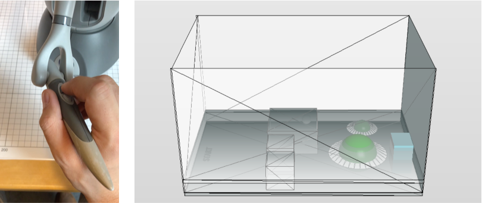
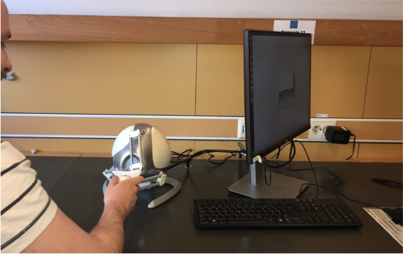
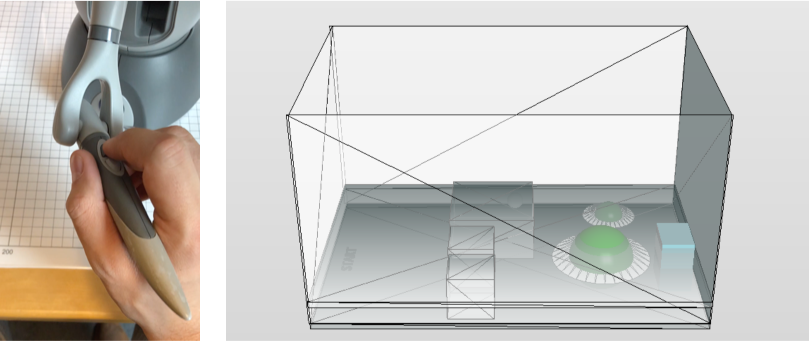
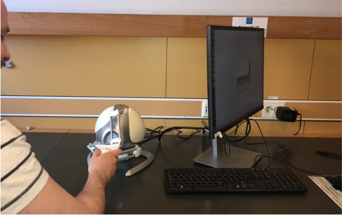
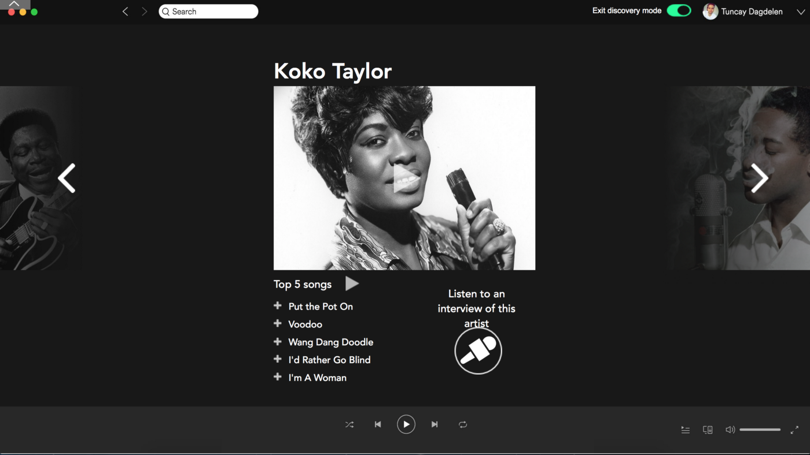
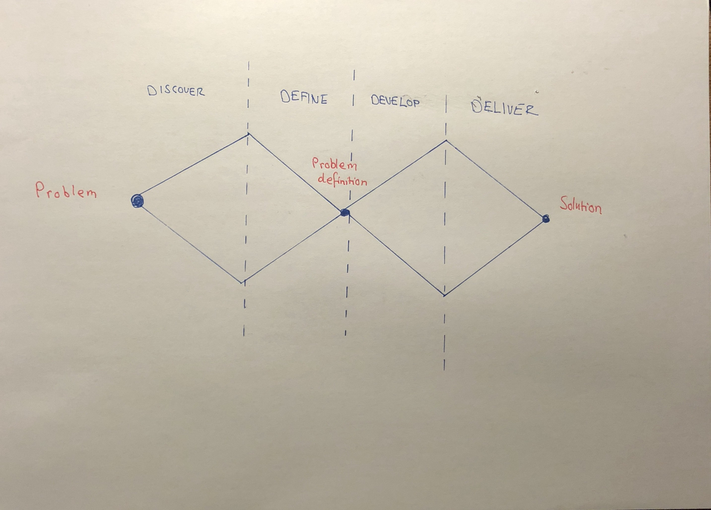
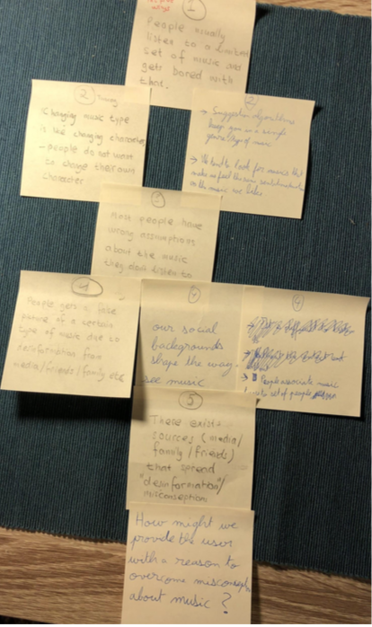
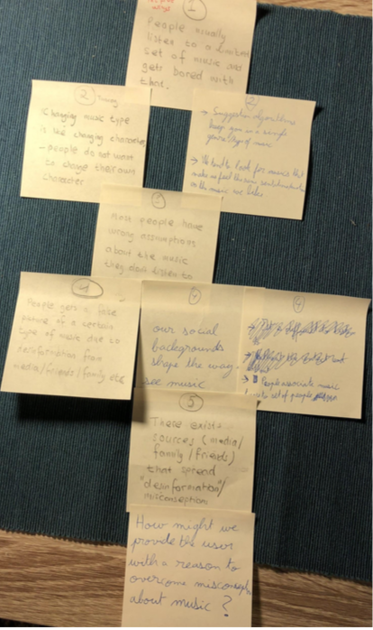

WORK
HAPTICS
 This project was performed for the course Haptics, Tactile and Tangible Interaction, spring 2018. We investigated which of the auditory feedback, haptic feedback, or a combination of them is most helpful in guiding a user through a non-visual virtual environment. A game was developed in order to evaluate this. The game consist of a field which the player must traverse.
This project was performed for the course Haptics, Tactile and Tangible Interaction, spring 2018. We investigated which of the auditory feedback, haptic feedback, or a combination of them is most helpful in guiding a user through a non-visual virtual environment. A game was developed in order to evaluate this. The game consist of a field which the player must traverse.
 The starting point is on the left side and the finish is on the right side. On the field, there are holes that the player must avoid. The player gets a warning (audio, vibration, or a combination of both) when approaching a pothole. If the player falls down to the pothole, he/she must restart the game. There are also obstacles on the path of the player. These blocks the way for the player but they also have a function. As the player are not allowed to see the screen, the obstacles can help them remember where he/she got stuck and try to avoid that path next time.
The player used the Novint Falcon, a haptic device that can provide 3 Degree of Freedom (DOF) control and force feedback.

The haptic feedback, i.e. vibrations, was generated through this device. For the auditory feedback, we wanted a continuous sound that can be perceived as a warning without sounding too loud for the ear. Therefore, we chose to use a 400 Hz sine wave sound.
The main method of evaluating was to counting errors i.e. how many times a player falls into the potholes. It showed that the combination of audio-haptic warning was the best. But interviews showed that the haptic and sound don’t share the same priority. Participant felt that they perceived the haptic feedback more distinct and that the audio played a complementary role.

The design process consisted of laborations in the course, literature reviews, brainstorming, wireframes, interviews, think-alouds sessions with the game.
To create the mashes for the game we used Blender and to program the haptic device we used CHAI3D, a C++ simulation framework for devices like the Novint Falcon.
My main role was to design and program the game.
The starting point is on the left side and the finish is on the right side. On the field, there are holes that the player must avoid. The player gets a warning (audio, vibration, or a combination of both) when approaching a pothole. If the player falls down to the pothole, he/she must restart the game. There are also obstacles on the path of the player. These blocks the way for the player but they also have a function. As the player are not allowed to see the screen, the obstacles can help them remember where he/she got stuck and try to avoid that path next time.
The player used the Novint Falcon, a haptic device that can provide 3 Degree of Freedom (DOF) control and force feedback.

The haptic feedback, i.e. vibrations, was generated through this device. For the auditory feedback, we wanted a continuous sound that can be perceived as a warning without sounding too loud for the ear. Therefore, we chose to use a 400 Hz sine wave sound.
The main method of evaluating was to counting errors i.e. how many times a player falls into the potholes. It showed that the combination of audio-haptic warning was the best. But interviews showed that the haptic and sound don’t share the same priority. Participant felt that they perceived the haptic feedback more distinct and that the audio played a complementary role.

The design process consisted of laborations in the course, literature reviews, brainstorming, wireframes, interviews, think-alouds sessions with the game.
To create the mashes for the game we used Blender and to program the haptic device we used CHAI3D, a C++ simulation framework for devices like the Novint Falcon.
My main role was to design and program the game.
MUSIC

This project was performed for the course Interaction Design Methods, spring 2018.
Our task was to investigate the general music consumption and behaviours when listening to music in order to define a problem and create a solution/prototype for it.
For our design process, we used the Double Diamond model.

Discovery — we did literature reviews and open interviews in order to understand the broad picture when it comes to consuming music; what services are used, how do we listen, when do we listen and why do we listen to certain music?
Define — From our interviews we found that users often get bored by listening to the same type of music and accordingly would like to find new music that resonates with them, whatever genre or artist it is. This led us to the Define phase and defining a problem statement.
We used the Five Whys technique to understand the root of the problem and to create the following problem statement: How might we trigger the user to actively discover new types of music they would like?  Development — We did more open interviews, this time with focus on our problem. After analysing the results from the interviews, we created primary and secondary personas. Based on these, we performed parallel design to create differents prototypes (with the tool JustInMind) and got them later evaluated by fellow students. The one that was most successful was brought into the Design phase and further developed.
Design — The final prototype was developed in Axure.
Deliver — The prototype was presented
Spotify can recommend new artists and songs, but they are based on what you already listen to and that is not what this user wants; the user wants something totally new! This is where our feature “Discovery Mode” comes in. Here, the Discovery Mode suggests Koko Taylor. Clicking the play button on the image, the user will hear 10 second samples from the top 5 songs from this artist. Also, a short text about the artist will appear. The user can also click on the individual songs to listen to the whole song and if he/she likes it, save the song by pressing the plus sign. After the user is done discovering new music, there will be a summary at the end showing the songs that the user found in the discovery mode.
I contributed by doing interviews, personas, wireframes and prototypes.
Define — From our interviews we found that users often get bored by listening to the same type of music and accordingly would like to find new music that resonates with them, whatever genre or artist it is. This led us to the Define phase and defining a problem statement.
We used the Five Whys technique to understand the root of the problem and to create the following problem statement: How might we trigger the user to actively discover new types of music they would like?  Development — We did more open interviews, this time with focus on our problem. After analysing the results from the interviews, we created primary and secondary personas. Based on these, we performed parallel design to create differents prototypes (with the tool JustInMind) and got them later evaluated by fellow students. The one that was most successful was brought into the Design phase and further developed.
Design — The final prototype was developed in Axure.
Deliver — The prototype was presented
Spotify can recommend new artists and songs, but they are based on what you already listen to and that is not what this user wants; the user wants something totally new! This is where our feature “Discovery Mode” comes in. Here, the Discovery Mode suggests Koko Taylor. Clicking the play button on the image, the user will hear 10 second samples from the top 5 songs from this artist. Also, a short text about the artist will appear. The user can also click on the individual songs to listen to the whole song and if he/she likes it, save the song by pressing the plus sign. After the user is done discovering new music, there will be a summary at the end showing the songs that the user found in the discovery mode.
I contributed by doing interviews, personas, wireframes and prototypes.